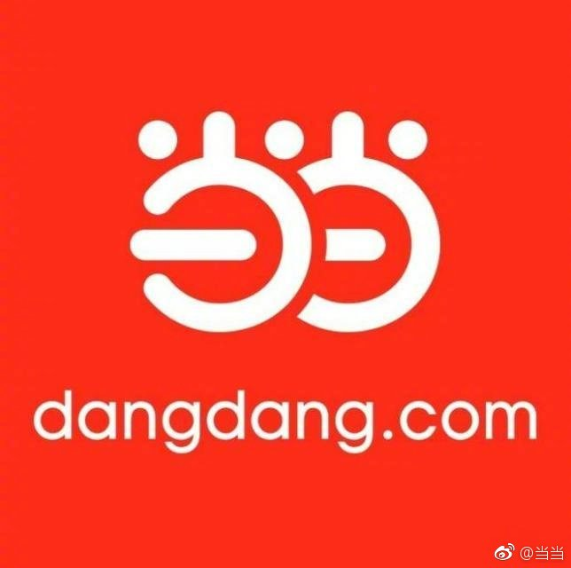

学习了下材料，现在明确的扣除金额上限有：子女教育 1000元/月； 赡养老人2000元/月；首套房屋贷款利息1000元/月，租房1500元/月，大病8万元/年， 月薪一万元左右的，如果这些扣除能用足，基本不用缴个人所得税了。

Ada李力
2018-12-24

Ada李力
2018-12-24
这是当当实际掌门俞渝首肯发布的？俞渝以前就说过李国庆有些二。李这种脑筋总像搭错似的人，确实不适宜再做品牌发声器了。
@当当:
当当网联合创始人李国庆，2018年12月23日发了一篇微博，点评刘强东明尼苏达事件。
李国庆先生是当当网联合创始人，他离开当当网管理层、决策层已有一段时间，李国庆先生的言论是他的个人观点，当当网已经要求李国庆将当当logo,从他个人微博号等处删掉。
当当网强烈谴责李国庆的此番言论。
明尼苏达检察官对刘强东不进行刑事立案，李国庆再把婚外情分成三六九等、打上无聊标签，把自己的婚前行为、搬出来嘚瑟，美曰分享。
当当网，有丰富的图书、有实惠的价格，我们的初心，是陪伴全国读者，用阅读丈量世界，请不要因为李国庆的个人言论，倒了您的胃口，坏了您读书的乐趣。
双旦来临，当当推出"满百减五十"，我们希望书香，增添您短假的愉悦。
李国庆先生是当当网联合创始人，他离开当当网管理层、决策层已有一段时间，李国庆先生的言论是他的个人观点，当当网已经要求李国庆将当当logo,从他个人微博号等处删掉。
当当网强烈谴责李国庆的此番言论。
明尼苏达检察官对刘强东不进行刑事立案，李国庆再把婚外情分成三六九等、打上无聊标签，把自己的婚前行为、搬出来嘚瑟，美曰分享。
当当网，有丰富的图书、有实惠的价格，我们的初心，是陪伴全国读者，用阅读丈量世界，请不要因为李国庆的个人言论，倒了您的胃口，坏了您读书的乐趣。
双旦来临，当当推出"满百减五十"，我们希望书香，增添您短假的愉悦。
- 